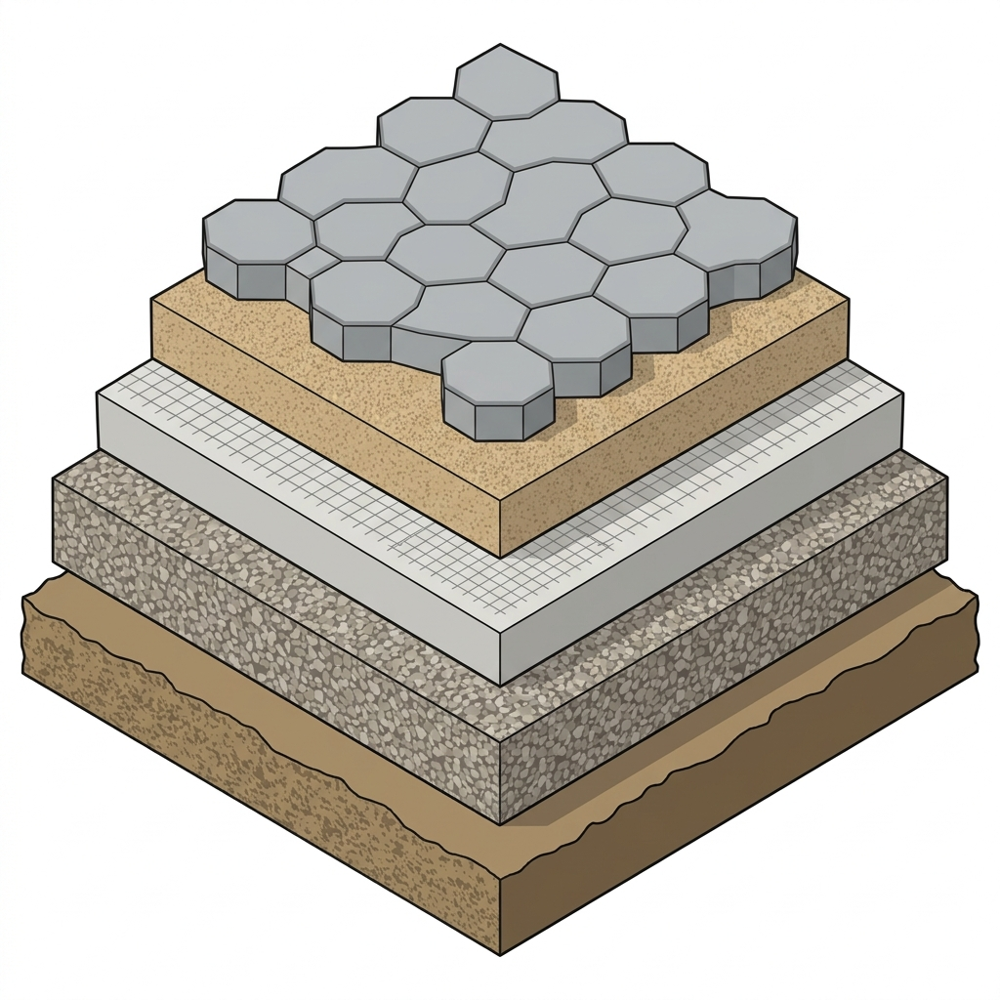

رغم تنوع التدخلات الحضرية، تظل المنهجية الموحدة للتنفيذ هي الضامن لجودة المخرجات
مرحلة اعتماد وتجهيز
متطلبات ما قبل التنفيذ
يشمل هذا التبويب كل ما يجب مراجعته واعتماده قبل بدء الأعمال في الموقع.
- رفع مساحي حديث للموقع.
- مراجعة مناسيب الأرصفة والمداخل وتصريف مياه الأمطار.
- حصر الخدمات القائمة: كهرباء، مياه، ري، اتصالات، صرف.
- اعتماد المخططات التنفيذية Shop Drawings.
- اعتماد العينات والمواد Mock-up / Material Samples.
- خطة تحويل الحركة المرورية والمشاة أثناء التنفيذ.
- خطة السلامة للموقع.
- حماية الأشجار والعناصر القائمة إن وجدت.
- تحديد مناطق التخزين المؤقت للمواد.
مرحلة تجهيز الموقع
أعمال الهدم والإزالة والتحضير
تركز هذه المرحلة على تنظيف الموقع وإعداده فنياً قبل تنفيذ الطبقات أو الخدمات الجديدة.
- إزالة الأرصفة أو الأسفلت أو البلدورات القائمة.
- إزالة العوائق والتعديات.
- كشط طبقات الأسفلت عند الحاجة.
- تسوية ودك التربة.
- معالجة التربة الضعيفة أو غير الصالحة.
- التخلص من المخلفات بطريقة نظامية.
- حماية الخدمات القائمة أثناء الحفر.
مرحلة حرجة قبل الرصف النهائي
أعمال البنية التحتية والخدمات
- تمديدات الري.
- تمديدات الكهرباء والإنارة.
- غرف التفتيش والمناهل.
- تصريف مياه الأمطار.
- تمديدات كاميرات المراقبة إن وجدت.
- تمديدات نقاط الكهرباء للأكشاك أو الفعاليات.
- حماية وتمديد Sleeves أسفل الأرصفة ومسارات السيارات.
- التنسيق مع الجهات الخدمية قبل الرصف النهائي.
القطاع الهندسي والتفصيلي
الرصف والأرضيات
تفاصيل الطبقات الإنشائية لمسارات المشاة والساحات باستخدام الإنترلوك، لضمان استدامة الرصف وتحمل الأوزان.
خطوات وطريقة التنفيذ
- 1. تحضير طبقة الأساس (Subgrade): يتم تسوية ودك التربة الطبيعية للوصول إلى الكثافة المطلوبة مع التأكد من خلوها من المواد العضوية.
- 2. طبقة الأساس الحصوي (Base Course): فرش وتوريد طبقة من البيسكورس بسمك 15-20 سم ودكها جيداً مع الرش بالماء للوصول إلى نسبة الدمك التصميمية.
- 3. صبة النظافة / الخرسانة: صب طبقة خرسانية مدعمة بالفايبر جلاس لمنع التشققات وتوزيع الأحمال.
- 4. طبقة التسوية (Bedding Sand): فرش طبقة من البحص الزيرو أو الرمل الخشن بسمك 3-5 سم لضمان استواء البلاط.
- 5. تركيب الإنترلوك: تركيب بلاط الإنترلوك بالنمط المعتمد، ثم دكه بالدكاك الهزاز مع رش رمل ناعم لملء الفراغات بين البلاطات (Jointing Sand).

بلاط إنترلوك (6 سم)
الطبقة النهائية للرصف
بحص زيرو (3 - 5 سم)
طبقة التسوية أسفل البلاط
خرسانة (فايبر جلاس)
تسليح خفيف 900 جم/م³
طبقة بيسكورس (15 - 20 سم)
طبقة الأساس الحصوية
تربة طبيعية مدموكة
طبقة ما تحت الأساس
دليل المعايير والمواصفات الزراعية
التشجير والري
تفاصيل وطرق تنفيذ أحواض الأشجار، تركيب شبكات الري الحديثة، واختيار أنواع النباتات الملائمة بيئياً لضمان الاستدامة.
- أبعاد أحواض الأشجار: يجب ألا تقل أبعاد الحوض الصافية للمشاة عن 1.5م × 1.5م وعمق 1.2م لضمان نمو الجذور السليم.
- عزل الرطوبة وحماية الرصيف: دهان الجوانب الداخلية للحوض بمواد عازلة للرطوبة لحماية طبقات الرصيف والخدمات المجاورة من تسرب المياه.
- التربة الزراعية المحسنة: استخدام مزيج تربة مكون من الرمل والبيتموس والسماد العضوي المعالج بنسبة 3:1:1 لتوفير تصريف وتغذية مثاليين.
- شبكة الري أوتوماتيكية بالتنقيط: تصميم شبكات الري بالتنقيط (Drip Irrigation) باستخدام مواسير البولي إيثيلين لتقليل الهدر وترشيد المياه.
- الأشجار المحلية المعتمدة: زراعة الأنواع المقاومة للجفاف والملوحة مثل الغاف الخليجي، السدر، اللبخ، والبروسوبس، مع تجنب الأنواع الدخيلة الضارة.
المتطلبات الكهربائية والفنية للشبكات
الإنارة والكهرباء
معايير تمديد الكابلات وتثبيت أعمدة إنارة المشاة التجميلية مع الالتزام التام باشتراطات الأمان كود البناء السعودي.
- أعمدة إنارة المشاة التجميلية: استخدام أعمدة بارتفاع 3.5م إلى 4.5م بمسافات بينية تضمن شدة إضاءة لا تقل عن 15 لوكس في مسار الحركة.
- تمديدات الكابلات الأرضية: تمديد كافة الكابلات الكهربائية داخل مواسير حماية uPVC متينة ومقاومة للحرارة تحت منسوب طبقة الأساس بـ 60 سم على الأقل.
- نظام التأريض الشامل (Earthing): تنفيذ شبكة تأريض متكاملة لكافة أعمدة الإنارة ولوحات التغذية لضمان الحماية من الصعق الكهربائي وتسريب التيار.
- إضاءة LED بلون دافئ (3000K): تركيب وحدات إضاءة LED ذات كفاءة عالية ولون إضاءة دافئ ومريح بصرياً لتعزيز جمالية المشهد الحضري ليلاً وتجنب التلوث الضوئي.
توزيع وتثبيت عناصر التأثيث الحضري
الأثاث الحضري
مواصفات توريد وتركيب المقاعد العامة، سلال المهملات، مواقف الدراجات، ومظلات انتظار الحافلات لتعزيز راحة المشاة.
- تثبيت المقاعد الخرسانية والخشبية: تثبيت المقاعد بشكل محكم على القاعدة الخرسانية للرصيف باستخدام براغي التثبيت المعدنية (Anchor Bolts) لمنع الحركة.
- سلال المهملات المزدوجة: توزيع السلال على مسافات منتظمة وتثبيتها بشكل متين، مع توفير حاويات منفصلة لفرز النفايات القابلة لإعادة التدوير.
- مواقف الدراجات الهوائية: تركيب مثبتات الدراجات المعدنية (بشكل حرف U المعتمد) في الفراغات المفتوحة ومسارات الحركة الآمنة لتشجيع التنقل المستدام.
- لوحات التوجيه والإرشاد البصري: تركيب اللوحات بمقاسات واضحة وارتفاع مناسب للرؤية لتوضيح الاتجاهات والوجهات السياحية أو الخدمية المجاورة.
متطلبات السلامة العامة وإدارة الموقع
السلامة والتحويلات
إجراءات حماية مستخدمي الشارع أثناء فترة التنفيذ وتأمين ممرات مشاة بديلة تتوافق مع اشتراطات الوصول الشامل.
- حواجز السلامة المؤقتة وعزل الموقع: تسوير كامل منطقة العمل بحواجز حماية بلاستيكية أو حديدية متينة وذات ألوان تحذيرية واضحة لضمان عدم دخول المشاة.
- تأمين ممرات مشاة بديلة ومهيأة: توفير ممرات مؤقتة آمنة ومستمرة للمشاة خالية تماماً من الحفر والعقبات ومجهزة بميول خفيفة تناسب ذوي الإعاقة وكبار السن.
- اللوحات والإنارات التحذيرية الليلية: تركيب فلاشات تحذيرية مضيئة ولوحات عاكسة عند بداية ونهاية مسارات العمل لتأمين الحركة ليلاً وتفادي الحوادث.
- تطبيق اشتراطات الأمن والسلامة المهنية: إلزام جميع العاملين في الموقع بارتداء أدوات الحماية الشخصية (الخوذة، سترة الأمان العاكسة، الأحذية الواقية) بشكل دائم.
إجراءات الفحص الفني والاستلام النهائي
الفحص والاستلام
قوائم التحقق النهائية واختبارات الجودة المطلوبة قبل تسليم المشروع بصفة رسمية للأمانة.
- اختبارات دك التربة والبيسكورس: التحقق من نتائج اختبارات الدمك (Compaction Test) لطبقات الرصيف والتأكد من وصولها للنسبة المطلوبة (لا تقل عن 95%).
- فحص الميول وتصريف مياه الأمطار: إجراء فحص عملي للميول السطحية للأرصفة ومسارات العبور للتأكد من عدم تجمع المياه وتدفقها بسلاسة للمناهل.
- اختبار تشغيل شبكات الري والإنارة: فحص واختبار تشغيل مضخات الري والرشاشات لضمان التغطية التامة، وتشغيل كامل وحدات الإنارة ليلاً.
- تقديم المخططات النهائية المنفذة (As-Built): تسليم نسخة متكاملة ومحدثة من المخططات الهندسية مطابقة للواقع الفعلي المنفذ قبل توقيع محضر الاستلام النهائي.